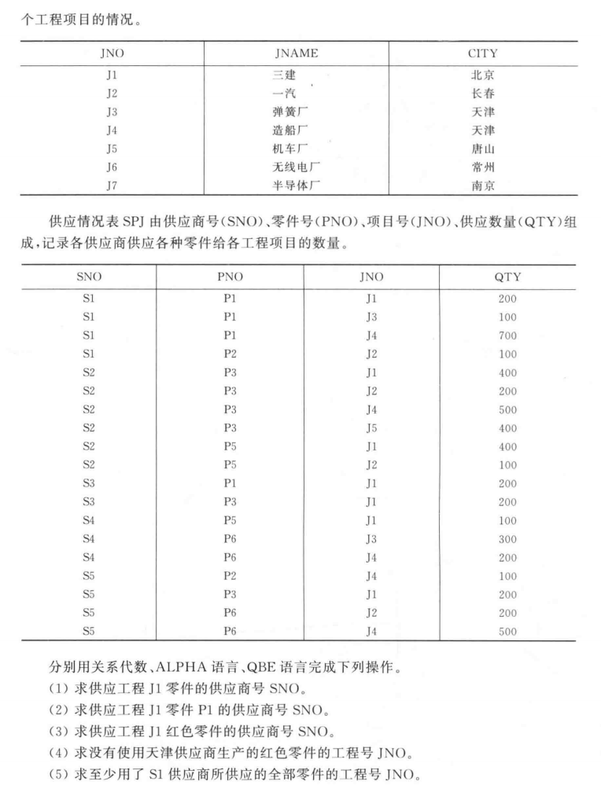

第五周¶
设有四个关系模式:
S(SNO, SNAME, CITY);
P(PNO, PNAME, COLOR, WEIGHT);
J(JNO, JNAME, CITY);
SPJ(SNO, PNO, JNO, QTY);
其中，
供应商表S有供应商号(SNO)、供应商姓名(SNAME)、供应商所在城市(CITY)组成，记录各个供应商的情况;
零件表P由零件号(PNO)、零件名称(PNAME)、零件颜色(COLOR)、零件重量(WEIGHT)组成，记录各种零件的情况;
工程项目表J由项目号(JNO)、项目名(JNAME)、项目所在城市(CITY)组成，记录各个工程项目的情况;
供应情况表SPJ由供应商号(SNO)、零件号(PNO)、项目号(JNO)、供应数量(QTY)组成，记录各供应商供应各种零件给各工程项目的数量。
(这四张表的实例见教材P63-64页)
请用SQL完成下列操作:
1)求没有使用天津供应商生产的红色零件的工程号JNO。
2)求至少使用了S1供应商所供应的全部零件的工程号JNO。
3)查找没有同城供应商的项目信息。
4)查找工程项目的同城供应商。
5)查找供应商号、供应商姓名以及供应 的项目总数。
6)查找供应的项目总数超过3的供应商号、供应商姓名。


1)求没有使用天津供应商生产的红色零件的工程号JNO
要查JNO 已知COLOR 走P表 得到PNO的约束 但是还要把供应商约束加上 考虑从S表 由CITY来查SNO
所以思路 先得出 使用了天津供应商生成的红色零件的工程号 再减去
JJ =
SELECT JNO
FROM SPJ
WHERE SNO IN (
SELECT SNO
FROM S
WHERE CITY = 'TJ'
)
AND PNO IN (
SELECT PNO
FROM P
WHERE COLOR = 'RED'
);
SELECT JNO IN J WHERE JNO NOT IN JJ;
2)求至少使用了S1供应商所供应的全部零件的工程号JNO
查JNO 但是把SNO和零件号PNO扯上关系 思路为 从SPJ表 取所有SNO为S1的PNO 为P# 然后检索使用PNO大于P#的JNO
考虑反义
查询一个零件的工程号JNO 使得 不存在一个零件 这个零件由S1供应 JNO没用这个零件
SELECT JNO FROM SPJ X
WHERE NOT EXISTS (
SELECT * FROM SPJ Y
WHERE Y.SNO = 'S1' # 遍历的对象Y 的供应商是S1
AND NOT EXISTS (
SELECT * FROM SPJ Z
WHERE Z.JNO = X.JNO AND Z.PNO = Y.PNO
)
)
第一层 遍历的对象是 SPJ中的元素X 我们希望对于所有满足供应商SNO是S1的Y 不存在一个零件 Z 满足Z和X是一个工程号（一个工程） 但是 Z和Y是同一个零件
3)查找没有同城供应商的项目信息
项目与供应商同城 也就是J.CITY == S.CITY 可以给SPJ S J 表查出来
先看
J2 =
SELECT SPJ.JNO
FROM SPJ, S, J
WHERE SPJ.SNO = S.SNO
AND SPJ.JNO = J.JNO
AND S.CITY = J.CITY
再不去查询
SELECT JNO, JNAME, CITY
FROM J
WHERE JNO NOT IN J2
4)查找工程项目的同城供应商
查的是S.SNAME 可以先找项目和供应商相同的写法
S2 =
SELECT SPJ.SNO
FROM SPJ, S, J
WHERE SPJ.SNO = S.SNO
AND SPJ.JNO = J.JNO
AND S.CITY = J.CITY
再正向
SELECT SNAME
FROM S
WHERE SNO IN S2
5)查找供应商号、供应商姓名以及供应 的项目总数
从S表查SNO 然后把SNO对应SPJ的JNO进行计数 用COUNT
SELECT S.SNO, S.SNAME COUNT(DISTINCT SPJ.JNO) AS COUNTS
FROM S, SPJ
WHERE S.SNO = SPJ.SNO
GROUP BY S.SNO, S.SNAME;
6)查找供应的项目总数超过3的供应商号、供应商姓名
查S的SNO SNAME 要求这里的 COUNT > 3
SELECT S.SNO, S.SNAME
FROM S, SPJ
WHERE S.SNO = SPJ.SNO
GROUP BY S.SNO, S.SNAME
HAVING COUNT(DISTINCT SPJ.JNO) > 3;